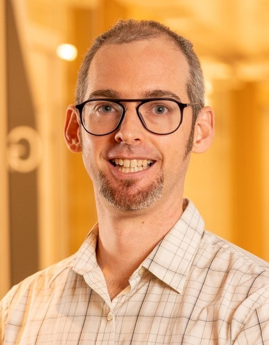
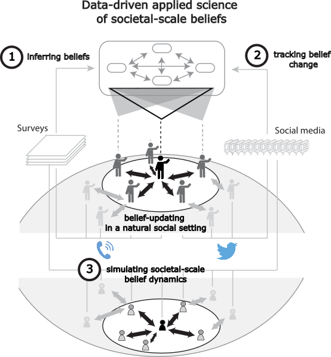

|
Research Scientist in the Applied Machine Learning Research Team
@ Mila, Québec AI Institute Working with the ComplexDataLab on diagnosing and designing online spaces to better address our socio-{political, economic, technical, environmental} dilemmas. PhD, Physics (IMPRS Physics of biological and complex systems), University of Göttingen MSc, Physics, University of Toronto BSc, Physics & Mathematics, University of Toronto |
 cebeuq [tod] alim [ta] mtamleup |
Towards these ends, I coordinate interdisciplinary collaborations with domain experts in which I also contribute technical mathematical and computational expertise (theory and models/algorithms for decision-making agent learning, statistical inference, data analysis, ...).
